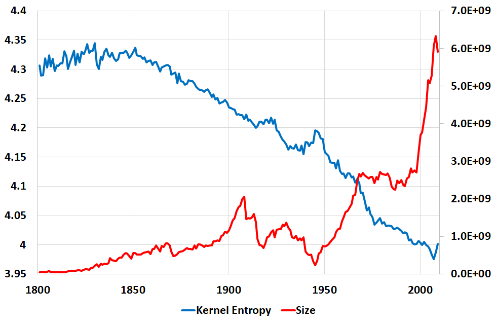

Introduction
The relationship between the entropy of language and its complexity has been the subject of much speculation – some seeing the increase of linguistic entropy as a sign of linguistic complexification or interpreting entropy drop as a marker of greater regularity (Montemurro and Zanette 2011, Juola 2016, Bentz et al. 2017). Some evolutionary explanations, like the learning bottleneck hypothesis, argues that communication systems having more regular structures tend to have evolutionary advantages over more complex structures (Kirby 2001, Tamariz and Kirby 2016, Ferrer I Cancho 2017). Other structural effects of communication networks, like globalization of exchanges or algorithmic mediation, have been hypothesized to have a regularization effect on language (Kaplan 2014).
Longer-term studies are now possible thanks to the arrival of large-scale diachronic corpora, like newspaper archives or digitized libraries (Westin and Geisler 2002, Fries and Lehmann 2006, Lyse and Andersen 2012, Rochat et al. 2016). However, simple analyses of such datasets are prone to misinterpretations due to significant variations of corpus size over the years and the indirect effect this can have on various measures of language change and linguistic complexity (Buntinx et al. 2017). In particular, it is important not to misinterpret the arrival of new words as an increase in complexity as this variation is intrinsical, as is the variation of corpus size.
This paper is an attempt to conduct an unbiased diachronic study of linguistic complexity over seven different languages using the Google Books corpus (Michel et al. 2011). The paper uses a simple entropy measure on a closed, but nevertheless large, subset of words, called kernels (Buntinx et al. 2016). The kernel contains only the words that are present without interruption for the whole length of the study. This excludes all the words that arrived or disappeared during the period. We argue that this method is robust towards variations of corpus size and permits to study change in complexity despite possible (and in the case of Google Books unknown) change in the composition of the corpus. Indeed, the evolution observed on the seven different languages shows rather different patterns that are not directly correlated with the evolution of the size of the respective corpora. The rest of the paper presents the methods followed, the results obtained and the next steps we envision.
Method and Results
We use the concept of kernel entropy (Buntinx et al. 2017), defined as the Shannon entropy measure applied on word occurrences distribution normalized on the kernel of a given corpus. To calculate this measure, the corpus is subdivided into yearly sub-corpora. Next, we then calculate the word occurrences for the words that are present in each sub-corpus for each year. These words form a set, called a kernel. The word frequencies are normalized on the kernel for each year and the formula of Shannon entropy (using napierian logarithm) is applied on these distributions providing a measure that can be compared diachronically with robustness to corpus size evolution and to noises. The kernel entropy of a kernel for the year is given by the formula:
Where is the number of words composing the kernel and the relative occurrence frequency of the word normalized on the kernel in the year . The kernel entropy measure is computed for seven languages of Google Books corpora. Figure 1 shows the kernel entropy variations normalized with respect to the average value (which change over the languages because kernels of different corpus also have different sizes).
Figure 1: Normalized yearly kernel entropy evolution from 1800 to 2009 of seven Google Books corpora: British English, American English, French, German, Italian, Spanish and Russian.
We observe that even if all the seven language have different patterns and inflection points, they tend generally to show an effect of negentropy with increasing years. We note that most languages have a crosspoint in 1905, except for the Russian language, showing variations particularly from 1920 to 1930. We present in Figure 2 the kernel entropy evolution for each language in comparison to the corpus size.
|
|
|
|
|
|
|
|

|
|
Legend: (1) British / American English (2) French / Italian (3) Spanish / German (4) Russian Kernel Entropy: Blue Size: Red |
|
Figure 2: Yearly kernel entropy evolution and size evolution from 1800 to 2009 of seven Google Books corpora: British English, American English, French, German, Italian, Spanish and Russian.
Google Books corpora may experience sudden changes in composition depending on the year. For example, the addition of scientific literature and medical journals (Pechenick et al., 2015). In this case, the words kernel distribution, even if it is robust because composed of the most stable words, can change for a year which is subject to a change of composition of the corpus. However, this effect is still reduced because the words appearing and disappearing during this transition phase are not taken into account. We observe that the entropy of the kernel seems not to be affected by the size variations of corpora and when it appear to be affected, the direction of variation is unpredictable.
The British English and American English are the least affected languages by the negentropic effect. Their kernel entropy increases over time until 1960 (British English) and 1940 (American English). However, American English kernel entropy decrease quickly from 1940 to 1985. We observe that the obtained curve for the French language is similar to the one corresponding to the study of language evolution through 200 years of newspapers written in French despite a different kernel size (Buntinx et al. 2017).
Interesting inflection points are detected and should be poignant to specialists of the targeted language. We present in Figure 3 the number of words in the kernel and inflections points for the seven languages.
| Language | Number of words in the kernel | Inflection point 1 | Inflection point 2 |
| British English | 82’332 | 1959 | |
| American English | 44’949 | 1931 | 1985 |
| French | 79’575 | 1825 | 1885 |
| German | 36’660 | 1850 | 1946 |
| Italian | 30’996 | 1983 | |
| Spanish | 25’582 | 1995 | |
| Russian | 5’123 | 1920 | 1988 |
Figure 3: Number of words in the kernel and kernel entropy inflection points for the seven Google Books corpora: British English, American English, French, German, Italian, Spanish and Russian.
Furthermore, it is possible to show the languages proximity in terms of kernel entropy evolution behavior through the determination of a distance based on kernel entropy correlations. A projection of the resulting matrix distance using PCA is presented in Figure 4.
We observe that British English and American English are represented together to the left of the plan because they have a relative opposite pattern with respect to other languages. Russian is also particular because of the brutal effect of the negentropy observed between around 1920 and the sudden increase at the end of the 1980s. The last four languages, French, Spanish, German and Italian share a more similar behavior and are represented in the right-bottom part of the plan.
Although much more in-depth investigation must be done, it is reasonable to make the hypothesis of different internal and external factors for explaining these various patterns. The Russian case clearly invites to investigate correlations between linguistic policies during the Sovietic period and their actual effects of the Russian language.
The similarity between French, German, Italian and Spanish pushes in the direction for similar processes of standardization, potentially due to linguistic convergence at national levels suppressing some regional particularities. In contrast, American and British English evolution is likely to be explained through the particular histories of the respective English-speaking populations and their relation to the rest of world. The progressive rise of English as a global language, spoken and written by many non-native speakers, is certainly playing a role in the shaping these particular curves.
Figure 4: PCA projection of distance matrix using kernel entropy correlation-based distance for Google Books corpora: British English, US English, French, German, Italian, Spanish and Russian.